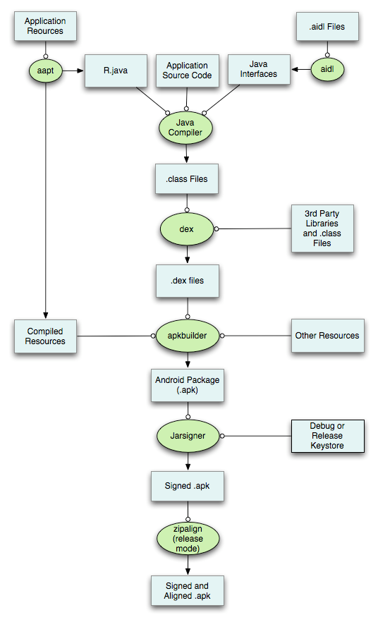

美团Android DEX自动拆包及动态加载简介
概述
作为一个android开发者，在开发应用时，随着业务规模发展到一定程度，不断地加入新功能、添加新的类库，代码在急剧的膨胀，相应的apk包的大小也急剧增加， 那么终有一天，你会不幸遇到这个错误：
- 生成的apk在android 2.3或之前的机器上无法安装，提示INSTALL_FAILED_DEXOPT
- 方法数量过多，编译时出错，提示：
Conversion to Dalvik format failed:Unable to execute dex: method ID not in [0, 0xffff]: 65536
而问题产生的具体原因如下：
无法安装（Android 2.3 INSTALL_FAILED_DEXOPT）问题，是由dexopt的LinearAlloc限制引起的，在Android版本不同分别经历了4M/5M/8M/16M限制，目前主流4.2.x系统上可能都已到16M， 在Gingerbread或者以下系统LinearAllocHdr分配空间只有5M大小的， 高于Gingerbread的系统提升到了8M。Dalvik linearAlloc是一个固定大小的缓冲区。在应用的安装过程中，系统会运行一个名为dexopt的程序为该应用在当前机型中运行做准备。dexopt使用LinearAlloc来存储应用的方法信息。Android 2.2和2.3的缓冲区只有5MB，Android 4.x提高到了8MB或16MB。当方法数量过多导致超出缓冲区大小时，会造成dexopt崩溃。
超过最大方法数限制的问题，是由于DEX文件格式限制，一个DEX文件中method个数采用使用原生类型short来索引文件中的方法，也就是4个字节共计最多表达65536个method，field/class的个数也均有此限制。对于DEX文件，则是将工程所需全部class文件合并且压缩到一个DEX文件期间，也就是Android打包的DEX过程中， 单个DEX文件可被引用的方法总数（自己开发的代码以及所引用的Android框架、类库的代码）被限制为65536；
插件化？ MultiDex？
解决这个问题，一般有下面几种方案，一种方案是加大Proguard的力度来减小DEX的大小和方法数，但这是治标不治本的方案，随着业务代码的添加，方法数终究会到达这个限制，一种比较流行的方案是插件化方案，另外一种是采用google提供的MultiDex方案，以及google在推出MultiDex之前Android Developers博客介绍的通过自定义类加载过程， 再就是Facebook推出的为Android应用开发的Dalvik补丁， 但facebook博客里写的不是很详细；我们在插件化方案上也做了探索和尝试，发现部署插件化方案，首先需要梳理和修改各个业务线的代码，使之解耦，改动的面和量比较巨大，通过一定的探讨和分析，我们认为对我们目前来说采用MultiDex方案更靠谱一些，这样我们可以快速和简洁的对代码进行拆分，同时代码改动也在可以接受的范围内； 这样我们采用了google提供的MultiDex方式进行了开发。
插件化方案在业内有不同的实现原理，这里不再一一列举，这里只列举下Google为构建超过65K方法数的应用提供官方支持的方案：MultiDex。
首先使用Android SDK Manager升级到最新的Android SDK Build Tools和Android Support Library。然后进行以下两步操作：
1.修改Gradle配置文件，启用MultiDex并包含MultiDex支持
android {
compileSdkVersion 21 buildToolsVersion "21.1.0"
defaultConfig {
...
minSdkVersion 14
targetSdkVersion 21
...
// Enabling MultiDex support.
multiDexEnabled true
}
...
}
dependencies {
compile 'com.android.support:MultiDex:1.0.0'
}
2.让应用支持多DEX文件。在官方文档中描述了三种可选方法
- 在AndroidManifest.xml的application中声明android.support.MultiDex.MultiDexApplication；
- 如果你已经有自己的Application类，让其继承MultiDexApplication；
- 如果你的Application类已经继承自其它类，你不想/能修改它，那么可以重写attachBaseContext()方法：
@Override
protected void attachBaseContext(Context base) {
super.attachBaseContext(base);
MultiDex.install(this);
}
并在Manifest中添加以下声明：
<?xml version="1.0" encoding="utf-8"?>
<manifest xmlns:android="http://schemas.android.com/apk/res/android" package="com.example.android.MultiDex.myapplication">
<application
...
android:name="android.support.MultiDex.MultiDexApplication">
...
</application>
</manifest>
如果已经有自己的Application，则让其继承MultiDexApplication即可.
Dex自动拆包及动态加载
MultiDex带来的问题
在第一版本采用MultiDex方案上线后，在Dalvik下MultiDex带来了下列几个问题：
在冷启动时因为需要安装DEX文件，如果DEX文件过大时，处理时间过长，很容易引发ANR（Application Not Responding）；
采用MultiDex方案的应用可能不能在低于Android 4.0 (API level 14) 机器上启动，这个主要是因为Dalvik linearAlloc的一个bug (Issue 22586);
采用MultiDex方案的应用因为需要申请一个很大的内存，在运行时可能导致程序的崩溃，这个主要是因为Dalvik linearAlloc 的一个限制(Issue 78035). 这个限制在 Android 4.0 (API level 14)已经增加了, 应用也有可能在低于 Android 5.0 (API level 21)版本的机器上触发这个限制；
而在ART下MultiDex是不存在这个问题的，这主要是因为ART下采用Ahead-of-time (AOT) compilation技术，系统在APK的安装过程中会使用自带的dex2oat工具对APK中可用的DEX文件进行编译并生成一个可在本地机器上运行的文件，这样能提高应用的启动速度，因为是在安装过程中进行了处理这样会影响应用的安装速度，对ART感兴趣的可以参考一下ART和Dalvik的区别.
MultiDex的基本原理是把通过DexFile来加载Secondary DEX，并存放在BaseDexClassLoader的DexPathList中。
下面代码片段是BaseDexClassLoader findClass的过程:
protected Class<?> findClass(String name) throws ClassNotFoundException {
List<Throwable> suppressedExceptions = new ArrayList<Throwable>();
Class c = pathList.findClass(name, suppressedExceptions);
if (c == null) {
ClassNotFoundException cnfe = new ClassNotFoundException("Didn't find class \"" + name + "\" on path: " + pathList);
for (Throwable t : suppressedExceptions) {
cnfe.addSuppressed(t);
}
throw cnfe;
}
return c;
}
下面代码片段为怎么通过DexFile来加载Secondary DEX并放到BaseDexClassLoader的DexPathList中:
private static void install(ClassLoader loader, List<File> additionalClassPathEntries,
File optimizedDirectory)
throws IllegalArgumentException, IllegalAccessException,
NoSuchFieldException, InvocationTargetException, NoSuchMethodException {
/* The patched class loader is expected to be a descendant of
* dalvik.system.BaseDexClassLoader. We modify its
* dalvik.system.DexPathList pathList field to append additional DEX
* file entries.
*/
Field pathListField = findField(loader, "pathList");
Object dexPathList = pathListField.get(loader);
ArrayList<IOException> suppressedExceptions = new ArrayList<IOException>();
expandFieldArray(dexPathList, "dexElements", makeDexElements(dexPathList,
new ArrayList<File>(additionalClassPathEntries), optimizedDirectory,
suppressedExceptions));
try {
if (suppressedExceptions.size() > 0) {
for (IOException e : suppressedExceptions) {
//Log.w(TAG, "Exception in makeDexElement", e);
}
Field suppressedExceptionsField =
findField(loader, "dexElementsSuppressedExceptions");
IOException[] dexElementsSuppressedExceptions =
(IOException[]) suppressedExceptionsField.get(loader);
if (dexElementsSuppressedExceptions == null) {
dexElementsSuppressedExceptions =
suppressedExceptions.toArray(
new IOException[suppressedExceptions.size()]);
} else {
IOException[] combined =
new IOException[suppressedExceptions.size() +
dexElementsSuppressedExceptions.length];
suppressedExceptions.toArray(combined);
System.arraycopy(dexElementsSuppressedExceptions, 0, combined,
suppressedExceptions.size(), dexElementsSuppressedExceptions.length);
dexElementsSuppressedExceptions = combined;
}
suppressedExceptionsField.set(loader, dexElementsSuppressedExceptions);
}
} catch(Exception e) {
}
}
Dex自动拆包及动态加载方案简介
通过查看MultiDex的源码，我们发现MultiDex在冷启动时容易导致ANR的瓶颈， 在2.1版本之前的Dalvik的VM版本中， MultiDex的安装大概分为几步，第一步打开apk这个zip包，第二步把MultiDex的dex解压出来（除去Classes.dex之外的其他DEX，例如：classes2.dex， classes3.dex等等)，因为android系统在启动app时只加载了第一个Classes.dex，其他的DEX需要我们人工进行安装，第三步通过反射进行安装，这三步其实都比较耗时， 为了解决这个问题我们考虑是否可以把DEX的加载放到一个异步线程中，这样冷启动速度能提高不少，同时能够减少冷启动过程中的ANR，对于Dalvik linearAlloc的一个缺陷(Issue 22586)和限制(Issue 78035)，我们考虑是否可以人工对DEX的拆分进行干预，使每个DEX的大小在一定的合理范围内，这样就减少触发Dalvik linearAlloc的缺陷和限制； 为了实现这几个目的，我们需要解决下面三个问题：
- 在打包过程中如何产生多个的DEX包？
- 如果做到动态加载，怎么决定哪些DEX动态加载呢？
- 如果启动后在工作线程中做动态加载，如果没有加载完而用户进行页面操作需要使用到动态加载DEX中的class怎么办？
我们首先来分析如何解决第一个问题，在使用MultiDex方案时，我们知道BuildTool会自动把代码进行拆成多个DEX包，并且可以通过配置文件来控制哪些代码放到第一个DEX包中， 下图是Android的打包流程示意图：

为了实现产生多个DEX包，我们可以在生成DEX文件的这一步中， 在Ant或gradle中自定义一个Task来干预DEX产生的过程，从而产生多个DEX，下图是在ant和gradle中干预产生DEX的自定task的截图:
tasks.whenTaskAdded { task ->
if (task.name.startsWith('proguard') && (task.name.endsWith('Debug') || task.name.endsWith('Release'))) {
task.doLast {
makeDexFileAfterProguardJar();
}
task.doFirst {
delete "${project.buildDir}/intermediates/classes-proguard";
String flavor = task.name.substring('proguard'.length(), task.name.lastIndexOf(task.name.endsWith('Debug') ? "Debug" : "Release"));
generateMainIndexKeepList(flavor.toLowerCase());
}
} else if (task.name.startsWith('zipalign') && (task.name.endsWith('Debug') || task.name.endsWith('Release'))) {
task.doFirst {
ensureMultiDexInApk();
}
}
}
上一步解决了如何打包出多个DEX的问题了，那我们该怎么该根据什么来决定哪些class放到Main DEX，哪些放到Secondary DEX呢（这里的Main DEX是指在2.1版本的Dalvik VM之前由android系统在启动apk时自己主动加载的Classes.dex，而Secondary DEX是指需要我们自己安装进去的DEX，例如：Classes2.dex, Classes3.dex等）， 这个需要分析出放到Main DEX中的class依赖，需要确保把Main DEX中class所有的依赖都要放进来，否则在启动时会发生ClassNotFoundException, 这里我们的方案是把Service、Receiver、Provider涉及到的代码都放到Main DEX中，而把Activity涉及到的代码进行了一定的拆分，把首页Activity、Laucher Activity、欢迎页的Activity、城市列表页Activity等所依赖的class放到了Main DEX中，把二级、三级页面的Activity以及业务频道的代码放到了Secondary DEX中，为了减少人工分析class的依赖所带了的不可维护性和高风险性，我们编写了一个能够自动分析Class依赖的脚本， 从而能够保证Main DEX包含class以及他们所依赖的所有class都在其内，这样这个脚本就会在打包之前自动分析出启动到Main DEX所涉及的所有代码，保证Main DEX运行正常。
随着第二个问题的迎刃而解，我们来到了比较棘手的第三问题，如果我们在后台加载Secondary DEX过程中，用户点击界面将要跳转到使用了在Secondary DEX中class的界面， 那此时必然发生ClassNotFoundException, 那怎么解决这个问题呢，在所有的Activity跳转代码处添加判断Secondary DEX是否加载完成？这个方法可行，但工作量非常大； 那有没有更好的解决方案呢？我们通过分析Activity的启动过程，发现Activity是由ActivityThread 通过Instrumentation来启动的，我们是否可以在Instrumentation中做一定的手脚呢？通过分析代码ActivityThread和Instrumentation发现，Instrumentation有关Activity启动相关的方法大概有：execStartActivity、newActivity等等，这样我们就可以在这些方法中添加代码逻辑进行判断这个Class是否加载了，如果加载则直接启动这个Activity，如果没有加载完成则启动一个等待的Activity显示给用户，然后在这个Activity中等待后台Secondary DEX加载完成，完成后自动跳转到用户实际要跳转的Activity；这样在代码充分解耦合，以及每个业务代码能够做到颗粒化的前提下，我们就做到Secondary DEX的按需加载了， 下面是Instrumentation添加的部分关键代码：
public ActivityResult execStartActivity(Context who, IBinder contextThread, IBinder token, Activity target,
Intent intent, int requestCode) {
ActivityResult activityResult = null;
String className;
if (intent.getComponent() != null) {
className = intent.getComponent().getClassName();
} else {
ResolveInfo resolveActivity = who.getPackageManager().resolveActivity(intent, 0);
if (resolveActivity != null && resolveActivity.activityInfo != null) {
className = resolveActivity.activityInfo.name;
} else {
className = null;
}
}
if (!TextUtils.isEmpty(className)) {
boolean shouldInterrupted = !MeituanApplication.isDexAvailable();
if (MeituanApplication.sIsDexAvailable.get() || mByPassActivityClassNameList.contains(className)) {
shouldInterrupted = false;
}
if (shouldInterrupted) {
Intent interruptedIntent = new Intent(mContext, WaitingActivity.class);
activityResult = execStartActivity(who, contextThread, token, target, interruptedIntent, requestCode);
} else {
activityResult = execStartActivity(who, contextThread, token, target, intent, requestCode);
}
} else {
activityResult = execStartActivity(who, contextThread, token, target, intent, requestCode);
}
return activityResult;
}
public Activity newActivity(Class<?> clazz, Context context, IBinder token,
Application application, Intent intent, ActivityInfo info,
CharSequence title, Activity parent, String id, Object lastNonConfigurationInstance)
throws InstantiationException, IllegalAccessException {
String className = "";
Activity newActivity = null;
if (intent.getComponent() != null) {
className = intent.getComponent().getClassName();
}
boolean shouldInterrupted = !MeituanApplication.isDexAvailable();
if (MeituanApplication.sIsDexAvailable.get() || mByPassActivityClassNameList.contains(className)) {
shouldInterrupted = false;
}
if (shouldInterrupted) {
intent = new Intent(mContext, WaitingActivity.class);
newActivity = mBase.newActivity(clazz, context, token,
application, intent, info, title, parent, id,
lastNonConfigurationInstance);
} else {
newActivity = mBase.newActivity(clazz, context, token,
application, intent, info, title, parent, id,
lastNonConfigurationInstance);
}
return newActivity;
}
实际应用中我们还遇到另外一个比较棘手的问题， 就是Field的过多的问题，Field过多是由我们目前采用的代码组织结构引入的，我们为了方便多业务线、多团队并发协作的情况下开发，我们采用的aar的方式进行开发，并同时在aar依赖链的最底层引入了一个通用业务aar，而这个通用业务aar中包含了很多资源，而ADT14以及更高的版本中对Library资源处理时，Library的R资源不再是static final的了，详情请查看google官方说明，这样在最终打包时Library中的R没法做到内联，这样带来了R field过多的情况，导致需要拆分多个Secondary DEX，为了解决这个问题我们采用的是在打包过程中利用脚本把Libray中R field（例如ID、Layout、Drawable等）的引用替换成常量，然后删去Library中R.class中的相应Field。
总结
上面就是我们在使用MultiDex过程中进化而来的DEX自动化拆包的方案， 这样我们就可以通过脚本控制来进行自动化的拆分DEX，然后在运行时自由的加载Secondary DEX，既能保证冷启动速度，又能减少运行时的内存占用。